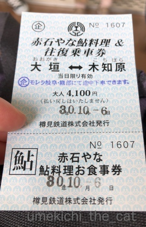
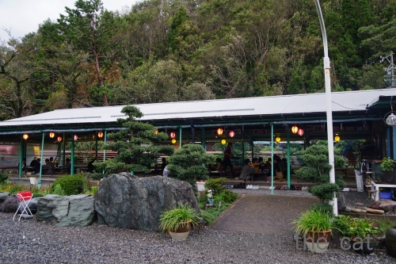
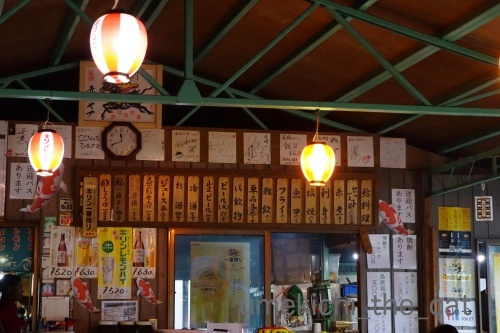
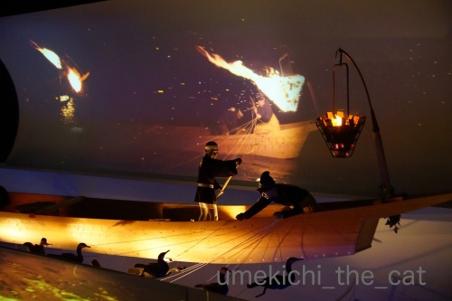
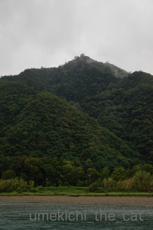
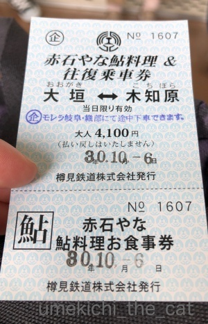
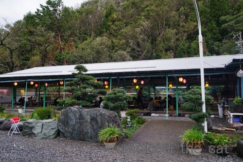
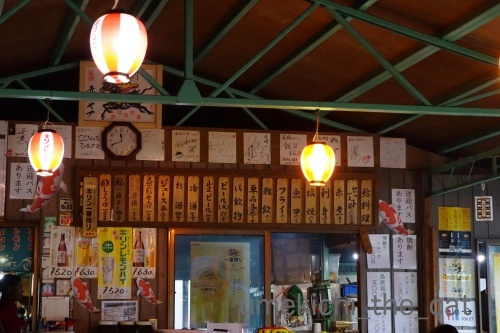
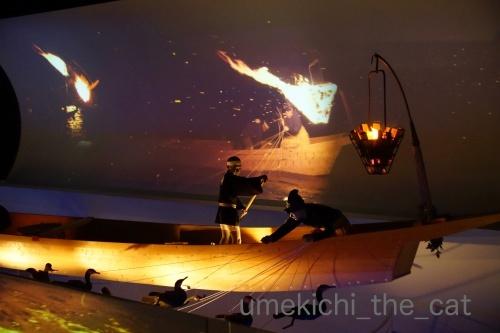
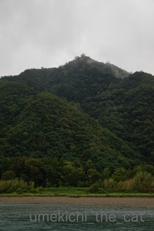

やなと谷汲山華厳寺、満願の旅 [旅行記]
連休を利用して岐阜に行って来ました。宿泊したのは岐阜市。
岐阜県だと飛騨、高山、白川郷、郡上八幡が観光地として人気だと思いますが
今回の目的は華厳寺に行くことだったので岐阜市が拠点。
華厳寺に行くことがなければ岐阜市内に泊まることはなかったと思いますが（岐阜市の方ごめんなさい）
岐阜市、街は清潔、長良川もとても綺麗に管理されていて街ゆく人もおっとりのんびり。
適度に都会で見渡せば山々に囲まれて・・・
とっても住みやすそうな良い街でした！！こういう街、好きなんです＾＾
水道水もそのまま美味しく飲めそう。
さて、新幹線で新大阪から米原まで。そこから東海道本線に乗り換えます。

途中関ヶ原駅にも止まります。
教科書に出てくるような場所、ちょっとテンション上がりませんか？
新幹線で通り過ぎたことはあっても駅に止まったことある方はあまりいらっしゃらないのでは。
（鉄道ファン戦国武将ファン除くw）
駅にはこんな立て看板が。
関ヶ原の合戦時の東西の主な武将の名前です。
戦国武将には疎い私でもだいたい（笑）わかる。
車窓から古戦場跡の看板も見えましたよ。

大垣という駅で今度は超ローカル線の樽見鉄道に乗り換えます。
発車の定刻を２〜３分すぎても切符を買っている人がいると待っていてくれる優しいローカル線。
良いですね、良いですね＾＾

運賃とお食事がセットになった券を買いましたよー。

向かったのは「やな」と呼ばれる河原にある小屋で鮎料理を食べさせてくれるところ。
海の家の河バージョンと思ってください。
木知原（こちぼらと読みます）周辺にはやなが点在しています。
このやなは最寄り駅までの往復を送迎してくれました。

単品料理も色々ありますがこの日はコース料理。
どんどん出て来ますよ。

鮎づくし。
ざっと紹介すると、赤煮（甘露煮のことです）お刺身、塩焼き、鮎田楽、フライ、鮎雑炊。
食べきれないと思ったので赤煮、鮎田楽はお持ち帰りしました。
王道はやっぱり塩焼き。炭火焼なので皮はぱりぱり身はふっくら。
一人２尾は多いんじゃない？と思いましたがぺろり。本当に美味しかったです！
お刺身は味というよりコリコリとした食感と滅多に食べられない希少価値を味わうものかな？
鮎雑炊は初めて食べましたが、鮎飯よりも鮎の出汁がよく出ていて絶品でした。
アルミの鍋でどーんと出てくるのが良いでしょw
岐阜市内でも鮎雑炊のお店はあちこちで見かけましたが
鮎飯を売りにしているお店は見かけませんでした。
産地では鮎雑炊が美味しいとされているのでしょうか。

根尾川と周りの山々を見渡しながらのお食事です。
天気悪く見えますか？そうです！台風の影響で雨が降って風が強かったのです。
悔しくなんかないもんw
山の所々に霧が立ってなかなかの眺めでした。ほんとだってばw

満腹になって再びローカル線で移動。
JR岐阜駅前では金ピカの信長公が出迎えてくれました。

時々雨が強く降って来ますが負けずに観光。
古ーい街並みが残っているあたりを散策します。

仕事が美しいです。
杉（かな？）をふんだんに使った建物、美濃和紙を使った工芸品を扱っているお店が多かったです。

岐阜市内を流れる長良川にはたくさんの鵜飼観光船が泊まっていました・・・
私たちもこういう船に乗って鵜飼を見物する予定だったのですが悪天候のため中止に(꒦ິ⌑꒦ີ)

埋め合わせに鵜飼ミュージアムに行って来ました。
長良川の鵜匠「宮内庁式部職鵜匠」というれっきとした国家公務員であることご存知でしたか？
現在宮内庁職員の鵜匠は岐阜市長良川の鵜匠６名、
岐阜関市小瀬（同じく長良川）の鵜匠３名計９名なんですって。
鵜匠は世襲制。
古くは戦国武将や将軍家の庇護を受けたりして伝統を守って来た鵜飼。
江戸期には庶民も鵜飼見物を楽しんだりしていたようです。見物した芭蕉の句も紹介されていましたよ。
明治期になって宮内省に組み入れられて安定した地位を得たようです。
実は私は鵜飼にあまり興味がなかったのですがミュージアムで色々見て
これは絶対に見なければ、と思いました。
赤松の篝火のなか船縁をコンコンと叩きながらの漁。
幻想的で美しい光景ではありませんか！
いつかリベンジしたいなぁ・・・

宿の窓から雨に煙る金華山と岐阜城を見上げましたよ。
夕食は本当は鵜飼見物の船に乗りながらホテルが用意したお弁当の予定だったのですが
ホテル内でのお食事に変更。
ここでも鮎がたくさん出て来て正直まいりましたwww
来シーズンまでもう鮎は食べなくて良いです。
シッターさんからのメールを待って梅吉の元気な様子を確認して安心して眠りにつきました。
 ↑ガブッと一押し↑
↑ガブッと一押し↑

お留守番のご褒美におとーさんにたくさん遊んでもらった梅吉さん。
かくれんぼ中です＾＾
岐阜県だと飛騨、高山、白川郷、郡上八幡が観光地として人気だと思いますが
今回の目的は華厳寺に行くことだったので岐阜市が拠点。
華厳寺に行くことがなければ岐阜市内に泊まることはなかったと思いますが（岐阜市の方ごめんなさい）
岐阜市、街は清潔、長良川もとても綺麗に管理されていて街ゆく人もおっとりのんびり。
適度に都会で見渡せば山々に囲まれて・・・
とっても住みやすそうな良い街でした！！こういう街、好きなんです＾＾
水道水もそのまま美味しく飲めそう。
さて、新幹線で新大阪から米原まで。そこから東海道本線に乗り換えます。

途中関ヶ原駅にも止まります。
教科書に出てくるような場所、ちょっとテンション上がりませんか？
新幹線で通り過ぎたことはあっても駅に止まったことある方はあまりいらっしゃらないのでは。
（鉄道ファン戦国武将ファン除くw）
駅にはこんな立て看板が。
関ヶ原の合戦時の東西の主な武将の名前です。
戦国武将には疎い私でもだいたい（笑）わかる。
車窓から古戦場跡の看板も見えましたよ。

大垣という駅で今度は超ローカル線の樽見鉄道に乗り換えます。
発車の定刻を２〜３分すぎても切符を買っている人がいると待っていてくれる優しいローカル線。
良いですね、良いですね＾＾

運賃とお食事がセットになった券を買いましたよー。

向かったのは「やな」と呼ばれる河原にある小屋で鮎料理を食べさせてくれるところ。
海の家の河バージョンと思ってください。
木知原（こちぼらと読みます）周辺にはやなが点在しています。
このやなは最寄り駅までの往復を送迎してくれました。

単品料理も色々ありますがこの日はコース料理。
どんどん出て来ますよ。

鮎づくし。
ざっと紹介すると、赤煮（甘露煮のことです）お刺身、塩焼き、鮎田楽、フライ、鮎雑炊。
食べきれないと思ったので赤煮、鮎田楽はお持ち帰りしました。
王道はやっぱり塩焼き。炭火焼なので皮はぱりぱり身はふっくら。
一人２尾は多いんじゃない？と思いましたがぺろり。本当に美味しかったです！
お刺身は味というよりコリコリとした食感と滅多に食べられない希少価値を味わうものかな？
鮎雑炊は初めて食べましたが、鮎飯よりも鮎の出汁がよく出ていて絶品でした。
アルミの鍋でどーんと出てくるのが良いでしょw
岐阜市内でも鮎雑炊のお店はあちこちで見かけましたが
鮎飯を売りにしているお店は見かけませんでした。
産地では鮎雑炊が美味しいとされているのでしょうか。

根尾川と周りの山々を見渡しながらのお食事です。
天気悪く見えますか？そうです！台風の影響で雨が降って風が強かったのです。
悔しくなんかないもんw
山の所々に霧が立ってなかなかの眺めでした。ほんとだってばw

満腹になって再びローカル線で移動。
JR岐阜駅前では金ピカの信長公が出迎えてくれました。

時々雨が強く降って来ますが負けずに観光。
古ーい街並みが残っているあたりを散策します。

仕事が美しいです。
杉（かな？）をふんだんに使った建物、美濃和紙を使った工芸品を扱っているお店が多かったです。

岐阜市内を流れる長良川にはたくさんの鵜飼観光船が泊まっていました・・・
私たちもこういう船に乗って鵜飼を見物する予定だったのですが悪天候のため中止に(꒦ິ⌑꒦ີ)

埋め合わせに鵜飼ミュージアムに行って来ました。
長良川の鵜匠「宮内庁式部職鵜匠」というれっきとした国家公務員であることご存知でしたか？
現在宮内庁職員の鵜匠は岐阜市長良川の鵜匠６名、
岐阜関市小瀬（同じく長良川）の鵜匠３名計９名なんですって。
鵜匠は世襲制。
古くは戦国武将や将軍家の庇護を受けたりして伝統を守って来た鵜飼。
江戸期には庶民も鵜飼見物を楽しんだりしていたようです。見物した芭蕉の句も紹介されていましたよ。
明治期になって宮内省に組み入れられて安定した地位を得たようです。
実は私は鵜飼にあまり興味がなかったのですがミュージアムで色々見て
これは絶対に見なければ、と思いました。
赤松の篝火のなか船縁をコンコンと叩きながらの漁。
幻想的で美しい光景ではありませんか！
いつかリベンジしたいなぁ・・・

宿の窓から雨に煙る金華山と岐阜城を見上げましたよ。
夕食は本当は鵜飼見物の船に乗りながらホテルが用意したお弁当の予定だったのですが
ホテル内でのお食事に変更。
ここでも鮎がたくさん出て来て正直まいりましたwww
来シーズンまでもう鮎は食べなくて良いです。
シッターさんからのメールを待って梅吉の元気な様子を確認して安心して眠りにつきました。

お留守番のご褒美におとーさんにたくさん遊んでもらった梅吉さん。
かくれんぼ中です＾＾

カフェオレ色の梅吉

梅吉 2023年8月10日 永眠


梅吉と出会った譲渡会

犬猫の理由なき殺処分ゼロ
妄想広告
UMEKICHI 光

爆発的に早い！
時々攻撃的！
Thanks to Mr.Boss365
爆発的に早い！
時々攻撃的！
Thanks to Mr.Boss365

鵜飼は残念だったけど台風はちぃさんの念力で曲がって遠回りしたようですね。
私的には金ピカの信長公がツボでした。これ岐阜の人には有名なのかしら。
by zombiekong (2018-10-10 02:49)
いつもは綺麗な川ですけど
台風じゃしょうがないですね＾＾
by ぽちの輔 (2018-10-10 06:49)
おはようございます。
鮎づくし！！子持ち鮎・落ち鮎の時期です。美味しそうですが・・・
連チャンはキツそうです。鮎雑炊？食べた事ないので味に興味惹かれます。
鵜飼見物の船の乗船、残念でしたが、鵜飼ミュージアムでの学びは有意義です。
世襲制の国家公務員になる？面白い。勉強になりました！？(=^･ｪ･^=)
PS.お留守番中の梅吉君「足にがぶがぶ」！！迫力ありました！！
by Boss365 (2018-10-10 11:01)
発車時間を過ぎても待ってくれるなんて
ほっこりする素敵な路線ですねぇ(^O^)
鮎づくしコース、鮎の炊き込みご飯は食べたことが
ありますが鮎の雑炊は食べたことがないので食べてみたい＾＾
長良川の鵜飼い、篝火が美しいですねぇ(^-^)
岐阜、魅力な街がたくさんで一度には回りきれないかも!(^^)!
あっ、かみさんは結婚前に友人と飛騨高山＆白川郷は旅行済みで
「とっても良かったよ＾＾」と教えてくれました(T_T)
by ニッキー (2018-10-10 12:07)
岐阜の私のイメージは、夏は暑い（ﾟ□ﾟ）
樽見鉄道にも乗ってみたいな～
そう言えば、大昔に岐阜に行った時は、まだ路面電車が走ってました（ﾟ□ﾟ）
by 英ちゃん (2018-10-10 12:27)
金ぴか信長公。びっくりしちゃったｗ
面白いけどなんだかね(*^-^*)
私は高校の修学旅行で合掌造りに宿泊しましたよ。
街並みもとっても素敵でした。
でも、観光はほとんど記憶にない。何をしていたやら・・・。
梅吉くん、お留守番大変よく出来ました(≧▽≦)
by emi (2018-10-10 12:47)
鮎づくし、すごいですね！
塩焼き以外にこんなにいろんな食べ方があるとは(^▽^;)
鵜飼は・・・鵜がゲロした魚を食べるの？！と敬遠気味でしたが、四万十川の火振り漁を見て、とても美しくて感動したのを思い出しました♪
梅吉さん、しっかりお留守番できてえらいな～(#^^#)
by ゆきち (2018-10-10 12:50)
いい旅・・・日本っていいな～、ってしみじみ感じる旅・・・私もでかけたいな。。。
良い子でお留守番してくれる坊やがいるからこそ。我が家は当分無理(ＴｍＴ)ｳｩｩ･･･
by Ginger (2018-10-10 13:42)
信長が金ピカ・・・信長らしいといえば信長らしい(#^^#)
梅吉くんお留守番お疲れ様です!!
by palpal (2018-10-10 14:31)
鮎ずくし、凄いですね。
前の前に住んでいた地域は、鮎ヤナが有名でした。
その地域に住んでいた時はよく行ってました。
鮎の刺身は食べたことがありません。
生は背ごしにされていました。
骨が気になって少し苦手でした。
金ピカの信長公は派手で満足でしょうね。
梅吉さん、お留守番お利口でした（笑）
by kiki (2018-10-10 15:42)
鵜飼は残念でしたが、鮎ずくしは羨ましいですね。
しかもお刺身なんて自分は食べる機会が無いような気もします(^_^;)
自分も週末は神奈川まで行くのですが、旅行で亡いのが残念なところです。
でも、ちょっとでも時間を作って観光したくなりました。
by kou (2018-10-10 18:23)
鵜飼いは見れなかったのは残念ですね！
岐阜はバスや車でしか行ったことないです。
ツアーで高山3年連続で寄りました(^^)
by ma2ma2 (2018-10-10 19:25)
おお、谷汲山華厳寺。行ったことは無いのですが、名前は知ってますー。
すぐ近くまで名鉄の谷汲線の電車が走っていたのですが、
残念ながら2001年に廃止になってしまったそうです。
（すみません。マニアックな話で）
古い街並み、いいですね。和みます。
そして鮎づくし！美味しそう。塩焼き以外にもいろいろな食べ方があるのですね。
たしか、鵜飼で獲れたアユって瞬時に〆られた状態なのでとりわけ美味しいんでしたっけ？
梅吉さん、いっぱい遊んでもらって良かったですね。^^)
by yes_hama (2018-10-10 21:16)
私も揖斐のおばあちゃんちの近くでやなは数回行ったことがあります
やなのコースは同じような感じでしたよ
３５００円くらいだったかな
電車賃と込で４１００円はお得だと思いますよ
塩焼きが一番おいしいですよね
あと唐揚げがパリパリして美味しいですね
by 花好き人 (2018-10-10 21:21)
追加、谷汲山華厳寺も寄られましたか
ここもいいですよ～
by 花好き人 (2018-10-10 21:22)
鮎は川魚の中では別格だと思っています。
塩焼きは絶対外せませんね。食べたい！
岐阜はいいところです(^^)
by riverwalk (2018-10-10 21:49)
zombiekongさん＞
私の念力か執念か翌日はすっかり晴れて暑い暑い！
二日間とも雨じゃなくて良かったですけれどw
金ピカ信長はJRの駅の広場にあるので
県民の皆さんはよくご存知かと思います。
が、こんなド派手なもの全国区じゃないのが不思議です。
（少なくとも私は行くまで知りませんでした(^_^;)）
ぽちの輔さん＞
翌日は晴れて美しい長良川の流れを楽しむことができました＾＾
岐阜市、良いところですね！
ん？ぽちの輔さんは岐阜は行動圏内？？
（他県の方だと思ってました）
Boss365さん＞
やなの鮎は本当に美味しかったです！
目いっぱい食べてからの夜も鮎はなかなか箸が進みませんでしたw
それにシチュエーションのせいもあるのか
やなの方が数段美味しく感じられて・・・
鮎雑炊は川魚の臭みも全くなくてどの魚系の出汁とも違うお味でしたよ。
機会がありましたら是非＾＾
ニッキーさん＞
関西では鮎の炊き込みご飯の方が主流です。
そもそも鮎を雑炊でいただくことを知らなかったので
その美味しさにびっくりしました！
ホテルの夕食でも出て来たのですが（笑）
こちらは鰹だしが勝って鮎感はあまり感じられず・・・
お味はぜひ「やな」で味わっていただきたいです＾＾
岐阜市内は外国人観光客があまりいなかったのも快適でしたw
英ちゃんさん＞
岐阜は暑い！確かに真夏は最高気温を記録したりしていますよね。
でも熱帯夜の日数や残暑の厳しさは大阪のほうがすごいかもw
路面電車・・・もう廃線になったのでしょうか。
路面電車も地下鉄も見当たらず
鉄道とバスが交通手段の街だなと思いました＾＾
樽見鉄道は柿畑の中をどんどん進みますよ！
emiさん＞
金ぴかはどちらかというと秀吉さんのイメージでしたが
信長さんも負けずに派手好きだったのねw
修学旅行で合掌造りに宿泊？楽しそう！囲炉裏端で鮎焼いてもらったり？？
高校生はそんなオプションないのかな(^_^;)
私も高校の修学旅行ってあんまり記憶にありません。
記憶にあるのは宇治で抹茶アイス食べて
自由時間に神戸の異人館に行ったくらい。
もっとちゃんと見ておけば良かった、と大人になって後悔してたら
関西の住人になってしまったよwww
ゆきちさん＞
鵜のゲロwww確かにそうですね！
そう言われるとジャコウ猫のうんPからコーヒー豆を取り出すのと
同じくらいの衝撃ですね(*>艸<)
岐阜では鵜のくちばしの跡がある鮎が珍重されるのだとか。
四万十の火振り漁も良いですねー。そちらも見てみたいです！
Gingerさん＞
若い頃は海外！と思っていましたが
最近は国内の旅行がしみじみと良いなと思うようになりました＾＾
家を開けるのも一泊以上は梅吉が恋しくて無理でーすwww
palpalさん＞
派手好きは秀吉の方が？と思ってましたが信長も負けてないようでw
色がまた絵に描いたような黄金色で（くすみ、なし！）
天気が良かったら燦然と輝くのかしらと思ったら笑えて来ました( ´艸｀)
kikiさん＞
「背ごし」ってなんだろうと調べちゃいました。
こんな風に輪切りにする料理の仕方があるのですね！
お刺身は骨をうまく避けて調理しているのか
骨は気になりませんでしたよ。
塩焼きも家で焼くと骨から身離れが悪くて食べにくいなと思うのですが
ここはするっと骨が取れて・・・不思議でした！
信長公は金ぴかでご満足なんですね(*>艸<)
kouさん＞
お刺身は大阪でも食べたことありませんでした。
（大阪は琵琶湖の養殖鮎が出回っています）
とれてすぐじゃないと味わえないものかもしれませんね！
どこかで機会があったら口にできると良いですねー＾＾
でも、kouさんが釣ったクロソイの方が美味しいですよ、きっと！！
お仕事で神奈川ですか？
お時間が出来てどこか観光ができると良いですね。
（天気もよければ良いですね＾＾）
ma2ma2さん＞
高山も良いですね＾＾
３年連続とはもう高山通ですね！
yes_hamaさん＞
名鉄が谷汲の方まで通っていたのですね！
名鉄の駅は市内の岐阜駅に名古屋っぽい駅弁はないか？と
行って見たのですがみあたらずw
そうそう！
鵜飼ミュージアムで鵜飼で取れた鮎はとびきり美味しいと説明がありました。
そして鵜の噛み跡がくっきりのこっている鮎が珍重されるとも＾＾
宿の夕食で出て来た鮎の塩焼き（爆）は長良川で取れた天然鮎ということでした。
噛み跡はなかったですが小ぶりで受け口で荒々しい顔してましたねー。
普段見慣れている養殖物とは違うかな？？と思いましたよ＾＾
花好き人さん＞
揖斐のおばあちゃんち付近のお花、いつも楽しませてもらっています＾＾
やなの料理は別のお店も同じ感じなんですね！
鮎料理、これ以上のレパートリーもそうそうないですものねーw
塩焼きの美味しさにはびっくりしました！
家で魚焼きグリルで焼くのと全然違う！！（当たり前ですね）
今回のコースに唐揚げはなかったので
次行くことがあったら唐揚げは是非食べて見たいです＾＾
次回の記事はたにくみさんのお参りですよ(^_－)☆
riverwalkさん＞
釣り人にとって岐阜は天国みたいなところでしょうか＾＾
やなの鮎は本当に美味しかったです。
炭火焼の鮎の塩焼きは最高でした！！
by ちぃ (2018-10-10 22:11)
鮎づくしですね～。
焼鮎が、美味しそうですねぇ。
by angie17 (2018-10-10 22:18)
ぶらりローカル鉄道途中下車の旅？^^
１車両の列車、萌えます(｡-_-｡)
鮎づくし！いいな！
そうでした、鵜飼といえば、岐阜。鵜飼といえば、鮎。繋がりました・・・
（鵜さんがとった鮎！？）
きれいな川を見ると、テンション上がりますよね。
天候は残念でしたが、楽しまれたようで、何よりです。
梅さまもお留守番おつかれさまでした。
by Ja-Kou66 (2018-10-10 23:58)
他県ですけど
この辺りは十分日帰り出来ますからね＾＾
by ぽちの輔 (2018-10-11 07:09)
鮎づくし。すごっ！
でも毎日続くとつらいかもー(^_^;)
お留守番しっかりできた子にはご褒美いっぱいかな？
by よーちゃん (2018-10-11 08:56)
岐阜は名古屋を起点にすると行きやすいので、
相方君の実家に帰ったとき、足を伸ばしたりします^^
「関ヶ原」って聞くと、歴史の教科書浮かんじゃいますよね♪♪
鵜飼見物残念でした；；
これはリベンジですね！
そういえば、わたしが行ったときも台風のあとで
長良川がものすごい濁流でビックリしたこと思い出しました^^;
by リュカ (2018-10-11 13:42)
ローカル線かわいい！
鮎は焼いたのしか食べたことないですが
色々あるんですね~。
鵜飼見物はほんと残念。
旅行と天気の兼ね合いはほんと難しいですね。
しょうがないけど。
by ふにゃいの (2018-10-11 23:22)
angie17さん＞
「づくし」料理は苦手なんですが
これはそれぞれが違った味わいで美味しかったです！
Simple is best！でやっぱり塩焼きですね＾＾
Ja-kou66さん＞
１車両だけぽろんと走っているとなんだか可愛いですよね＾＾
同じような理由でトラックがコンテナのない状態で走っていると
ニヤニヤしちゃいますw
長良川、街のど真ん中を流れているのに水は澄んで
河原にゴミもなく本当に綺麗でした！
さすが鮎が住むだけのことはあります。
大阪では考えられないwww
ぽちの輔さん＞
こんな綺麗な街に気軽に遊びに行けていいなぁ♪
大阪からも日帰り出来なくもないですが
移動疲れで終わっちゃいそうですw
よーちゃん＞
鮎、いくら美味しくても連チャンはね、って感じでしたw
しかも〜、先に食べたやなのほうが断然美味しかったので
ホテルの鮎はなおさら辛かったですwww
梅吉はかまってちゃんなので帰ってきてからず〜〜〜〜っと
にんげんの後にくっついて隙あらば遊んでもらおうとしてました ( ´艸｀)
リュカさん＞
名鉄が走っているしね！
岐阜は名古屋文化だなって思いましたよ＾＾
関ヶ原と並んで京都：天王山もテンション上がりがちの場所です！！
まだ行ったことないのでサントリーの山崎工場と合わせて訪れたいです＾＾
鵜飼は見物済みなのですねー。
真夏は暑そうだし秋は台風の影響受けそうだし
いつが良いのか思案中=´ᆺ`=
ふにゃいのさん＞
ローカル線って寸足らずな感じが可愛いですよね♪
ちびっこって感じでしょうか＾＾
私も鮎は塩焼きと鮎飯しか口にしたことがなかったので
意外に多いレパートリーに驚きました。
この他に唐揚げなんてのもありましたよ。
鵜飼は残念でしたが両日とも雨じゃなくて良かったです＾＾
by ちぃ (2018-10-12 17:43)